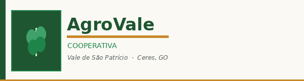

João Batista Ferreira
Ceres, GO — Soja e milho — 18 anos na cooperativa
"A AgroVale mudou a forma como planejo minha safra. O acesso técnico e o crédito cooperativo transformaram minha produtividade."

A AgroVale Cooperativa de Produtores do Vale de São Patrício foi fundada em 1987 por produtores rurais da região de Ceres e Rialma, no Cerrado goiano.
Reunimos mais de 340 cooperados em 18 municípios, com foco na produção de grãos e no fortalecimento da agricultura familiar e empresarial do Vale.
Números da safra 2024/2025 (1 alqueire goiano = 4,84 ha):
| Cultura | Área (alqueires goianos) | Produção (sacas de 60 kg) | Produtividade (sac/alq) |
|---|---|---|---|
| Soja | 1.240 | 74.400 | 60 |
| Milho | 860 | 103.200 | 120 |
| Sorgo | 420 | 25.200 | 60 |
| Total | 2.520 | 202.800 | — |
Ceres, GO — Soja e milho — 18 anos na cooperativa
"A AgroVale mudou a forma como planejo minha safra. O acesso técnico e o crédito cooperativo transformaram minha produtividade."
Rubiataba, GO — Sorgo e feijão — 7 anos na cooperativa
"Entrar para a cooperativa foi a melhor decisão da minha vida como produtora. O apoio na comercialização fez toda a diferença."
Preencha o formulário para iniciar seu pré-cadastro de cooperado.